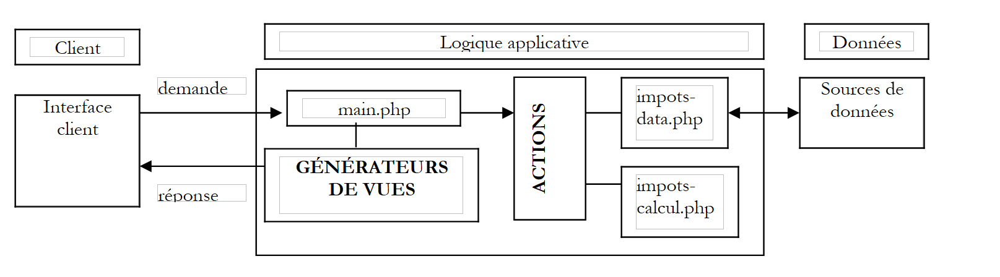
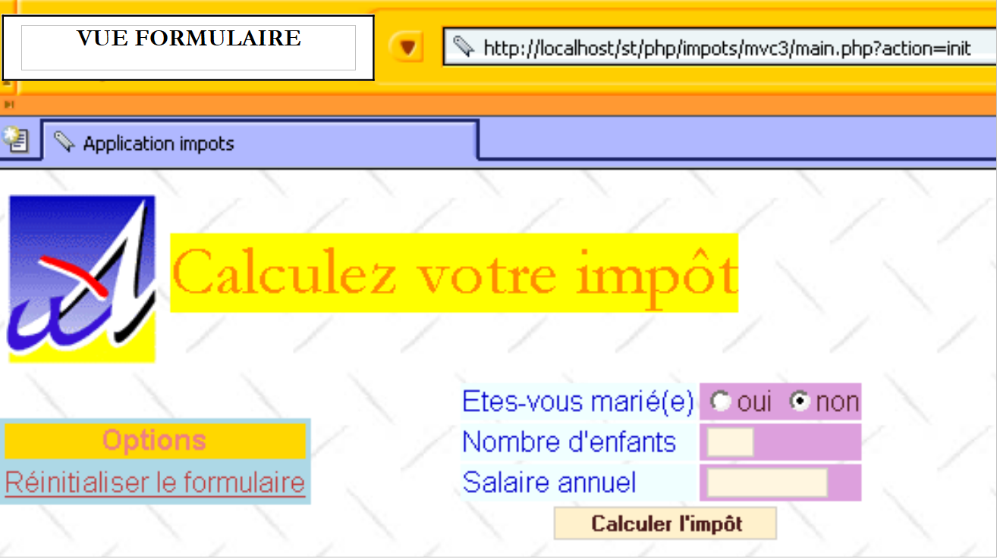

4. Un'applicazione esemplificativa
Proponiamo di illustrare il metodo precedente con un esempio di calcolo delle imposte.
4.1. Il problema
Si propone di scrivere un programma che consenta di calcolare l’imposta di un contribuente. Si considera il caso semplificato di un contribuente che abbia da dichiarare solo il proprio stipendio:
- si calcola il numero di quote del dipendente nbParts=nbEnfants/2 +1 se non è sposato, nbEnfants/2+2 se è sposato, dove nbEnfants è il numero dei suoi figli. Il numero di quote viene aumentato di 0,5 se i figli sono tre o più.
- si calcola il suo reddito imponibile R=0,72*S, dove S è il suo stipendio annuale
- si calcola il suo coefficiente familiare Q = R/N
- si calcola la sua imposta I in base ai seguenti dati
| Ogni riga ha 3 campi limite: coeffR, coeffN. Per calcolare l'imposta I, si cerca la prima riga in cui QF ≤ limite. Ad esempio, se QF = 30000, si troverà la riga: 31810 0,2 3309,5. L’imposta I è quindi pari a 0,2*R - 3309,5*nbParts. Se QF è tale che la relazione QF<=limite non è mai soddisfatta, allora vengono utilizzati i coefficienti dell’ultima riga: 0 0,65 49062, il che dà l’imposta I=0,65*R - 49062*nbParts. |
4.2. Il database
I dati precedenti sono memorizzati in un database MySQL denominato dbimpots. L’utente seldbimpots, con password mdpseldbimpots, dispone di un accesso in sola lettura al contenuto del database. Quest’ultimo contiene un’unica tabella denominata impots, la cui struttura è la seguente:

Il suo contenuto è il seguente:

4.3. L'architettura MVC dell'applicazione
L’applicazione avrà la seguente architettura MVC:
 |
- il controller main.php sarà il controller generico descritto in precedenza
- la richiesta del client viene inviata al controller sotto forma di una richiesta del tipo main.php?action=xx. Il valore del parametro action determina lo script del blocco ACTIONS da eseguire. Lo script di azione eseguito restituisce al controller una variabile che indica lo stato in cui deve essere posta l’applicazione web. In base a tale stato, il controller attiverà uno dei generatori di viste per inviare la risposta al client.
- impots-data.php è la classe incaricata di fornire al controller i dati di cui ha bisogno
- impots-calcul.php è la classe di business che consente il calcolo dell’imposta
4.4. La classe di accesso ai dati
La classe di accesso ai dati è progettata per nascondere all’applicazione web la provenienza dei dati. Nella sua interfaccia è presente un metodo getData che fornisce i tre array di dati necessari al calcolo dell’imposta. Nel nostro esempio, i dati vengono prelevati da un database MySQL. Per rendere la classe indipendente dal tipo effettivo di SGBD, utilizzeremo la libreria pear::DB descritta in appendice. Il codice della classe è il seguente:
<?php
// librerie
require_once 'DB.php';
class impots_data{
// classe di accesso alla fonte dati DBIMPOTS
// attributi
var $sDSN; // stringa di connessione
var $sDatabase; // nome del database
var $oDB; // connessione al database
var $aErreurs; // elenco degli errori
var $oRésultats; // risultato di una query
var $connecté; // valore booleano che indica se si è connessi o meno al database
var $sQuery; // l'ultima query eseguita
// costruttore
function impots_data($dDSN){
// $dDSN: dizionario che definisce la connessione da stabilire
// $dDSN['sgbd']: il tipo di SGBD a cui è necessario connettersi
// $dDSN['host']: il nome del computer host che lo ospita
// $dDSN['database']: il nome del database a cui è necessario connettersi
// $dDSN['user']: un utente del database
// $dDSN['mdp']: la sua password
// crea in $oDB una connessione al database definito da $dDSN con l'identità di $dDSN['user']
// se la connessione va a buon fine
// inserisce in $sDSN la stringa di connessione al database
// inserisce in $sDataBase il nome del database a cui ci si connette
// imposta $connecté su vero
// se la connessione non va a buon fine
// inserisce i messaggi di errore appropriati nell'elenco $aErreurs
// chiude la connessione se necessario
// imposta $connecté su falso
// azzeramento dell'elenco degli errori
$this->aErreurs=array();
// si crea una connessione al database $sDSN
$this->sDSN=$dDSN["sgbd"]."://".$dDSN["user"].":".$dDSN["mdp"]."@".$dDSN["host"]."/".$dDSN["database"];
$this->sDatabase=$dDSN["database"];
$this->connect();
// Connesso?
if( ! $this->connecté) return;
// connessione riuscita
$this->connecté=TRUE;
}//produttore
// ------------------------------------------------------------------
function connect(){
// (ri)connessione al database
// azzeramento elenco errori
$this->aErreurs=array();
// si sta creando una connessione al database $sDSN
$this->oDB=DB::connect($this->sDSN,true);
// errore?
if(DB::iserror($this->oDB)){
// si registra l'errore
$this->aErreurs[]="Echec de la connexion à la base [".$this->sDatabase."] : [".$this->oDB->getMessage()."]";
// la connessione non è andata a buon fine
$this->connecté=FALSE;
// fine
return;
}
// connessione stabilita
$this->connecté=TRUE;
}//connettiti
// ------------------------------------------------------------------
function disconnect(){
// se si è connessi, si chiude la connessione alla base $sDSN
if($this->connecté){
$this->oDB->disconnect();
// la connessione è stata interrotta
$this->connecté=FALSE;
}//se
}//disconnessione
// -------------------------------------------------------------------
function execute($sQuery){
// $sQuery: richiesta da eseguire
// si memorizza la richiesta
$this->sQuery=$sQuery;
// si è connessi?
if(! $this->connecté){
// si registra l'errore
$this->aErreurs[]="Pas de connexion existante à la base [$this->sDatabase]";
// fine
return;
}//if
// esecuzione della richiesta
$this->oRésultats=$this->oDB->query($sQuery);
// errore?
if(DB::iserror($this->oRésultats)){
// si rileva l'errore
$this->aErreurs[]="Echec de la requête [$sQuery] : [".$this->oRésultats->getMessage()."]";
// ritorno
return;
}//if
}//esegui
// ------------------------------------------------------------------
function getData(){
// si recuperano le 3 serie di dati limite, coeffr, coeffn
$this->execute('select limites, coeffR, coeffN from impots');
// errori?
if(count($this->aErreurs)!=0) return array();
// si esegue l'iterazione sul risultato della selezione
while ($ligne = $this->oRésultats->fetchRow(DB_FETCHMODE_ASSOC)) {
$limites[]=$ligne['limites'];
$coeffr[]=$ligne['coeffR'];
$coeffn[]=$ligne['coeffN'];
}//while
return array($limites,$coeffr,$coeffn);
}//getDataImpots
}//classe
?>
Un programma di test potrebbe essere il seguente:
<?php
// libreria
require_once "c-impots-data.php";
require_once "DB.php";
// test della classe impots-data
ini_set('track_errors','on');
ini_set('display_errors','on');
// configurazione di base dbimpots
$dDSN=array(
"sgbd"=>"mysql",
"user"=>"seldbimpots",
"mdp"=>"mdpseldbimpots",
"host"=>"localhost",
"database"=>"dbimpots"
);
// accesso
$oImpots=new impots_data($dDSN);
// errori?
if(checkErreurs($oImpots)){
exit(0);
}
// monitoraggio
echo "Connecté à la base...\n";
// recupero dei dati relativi a limiti, coeffr, coeffn
list($limites,$coeffr,$coeffn)=$oImpots->getData();
// errori?
if( ! checkErreurs($oImpots)){
// contenuto
echo "données : \n";
for($i=0;$i<count($limites);$i++){
echo "[$limites[$i],$coeffr[$i],$coeffn[$i]]\n";
}//for
}//if
// si disconnette
$oImpots->disconnect();
// monitoraggio
echo "Déconnecté de la base...\n";
// fine
exit(0);
// ----------------------------------
function checkErreurs(&$oImpots){
// errori?
if(count($oImpots->aErreurs)!=0){
// visualizzazione
for($i=0;$i<count($oImpots->aErreurs);$i++){
echo $oImpots->aErreurs[$i]."\n";
}//per
// errori
return true;
}//if
// nessun errore
return false;
}//checkErreurs
?>
L'esecuzione di questo programma di test fornisce i seguenti risultati:
Connecté à la base...
données :
[12620,0,0]
[13190,0.05,631]
[15640,0.1,1290.5]
[24740,0.15,2072.5]
[31810,0.2,3309.5]
[39970,0.25,4900]
[48360,0.3,6898]
[55790,0.35,9316.5]
[92970,0.4,12106]
[127860,0.45,16754]
[151250,0.5,23147.5]
[172040,0.55,30710]
[195000,0.6,39312]
[0,0.65,49062]
Déconnecté de la base...
4.5. La classe di calcolo dell'imposta
Questa classe consente di calcolare l'imposta di un contribuente. Al suo costruttore vengono forniti i dati necessari per effettuare tale calcolo. Il costruttore provvede quindi a calcolare l'imposta corrispondente. Il codice della classe è il seguente:
<?php
class impots_calcul{
// classe di calcolo dell'imposta
// costruttore
function impots_calcul(&$perso,&$data){
// $perso: dizionario con le seguenti chiavi
// figli: numero di figli
// stipendio: stipendio annuo
// sposato(a): valore booleano che indica se il contribuente è sposato o meno
// imposta(e): imposta da pagare calcolata da questo generatore
// $data: dizionario con le seguenti chiavi
// limiti: tabella dei limiti delle fasce
// coeffr: tabella dei coefficienti del reddito
// coeffn: tabella dei coefficienti del numero di quote
// le 3 tabelle hanno lo stesso numero di elementi
// calcolo del numero di quote
if($perso['marié'])
$nbParts=$perso['enfants']/2+2;
else $nbParts=$perso['enfants']/2+1;
if ($perso['enfants']>=3) $nbParts+=0.5;
// reddito imponibile
$revenu=0.72*$perso['salaire'];
// quoziente familiare
$QF=$revenu/$nbParts;
// ricerca della fascia di imposta corrispondente a QF
$nbTranches=count($data['limites']);
$i=0;
while($i<$nbTranches-2 && $QF>$data['limites'][$i]) $i++;
// l'imposta
$perso['impot']=floor($data['coeffr'][$i]*$revenu-$data['coeffn'][$i]*$nbParts);
}//costruttore
}//classe
?>
Un programma di test potrebbe essere il seguente:
<?php
// libreria
require_once "c-impots-data.php";
require_once "c-impots-calcul.php";
// configurazione di base dbimpots
$dDSN=array(
"sgbd"=>"mysql",
"user"=>"seldbimpots",
"mdp"=>"mdpseldbimpots",
"host"=>"localhost",
"database"=>"dbimpots"
);
// accesso
$oImpots=new impots_data($dDSN);
// errori?
if(checkErreurs($oImpots)){
exit(0);
}
// monitoraggio
echo "Connecté à la base...\n";
// recupero dei dati relativi a limiti, coeffr, coeffn
list($limites,$coeffr,$coeffn)=$oImpots->getData();
// errori?
if(checkErreurs($oImpots)){
exit(0);
}
// Disconnessione
$oImpots->disconnect();
// monitoraggio
echo "Déconnecté de la base...\n";
// calcolo di un'imposta
$dData=array('limites'=>&$limites,'coeffr'=>&$coeffr,'coeffn'=>&$coeffn);
$dPerso=array('enfants'=>2,'salaire'=>200000,'marié'=>true,'impot'=>0);
new impots_calcul($dPerso,$dData);
dump($dPerso);
$dPerso=array('enfants'=>3,'salaire'=>200000,'marié'=>false,'impot'=>0);
new impots_calcul($dPerso,$dData);
dump($dPerso);
$dPerso=array('enfants'=>3,'salaire'=>20000,'marié'=>true,'impot'=>0);
new impots_calcul($dPerso,$dData);
dump($dPerso);
$dPerso=array('enfants'=>3,'salaire'=>2000000,'marié'=>true,'impot'=>0);
new impots_calcul($dPerso,$dData);
dump($dPerso);
// fine
exit(0);
// ----------------------------------
function checkErreurs(&$oImpots){
// errori?
if(count($oImpots->aErreurs)!=0){
// visualizzazione
for($i=0;$i<count($oImpots->aErreurs);$i++){
echo $oImpots->aErreurs[$i]."\n";
}//per
// errori
return true;
}//if
// nessun errore
return false;
}//checkErreurs
?>
L'esecuzione di questo programma di test fornisce i seguenti risultati:
Connecté à la base...
Déconnecté de la base...
[enfants,2] [salaire,200000] [marié,1] [impot,22506]
[enfants,3] [salaire,200000] [marié,] [impot,22506]
[enfants,3] [salaire,20000] [marié,1] [impot,0]
[enfants,3] [salaire,2000000] [marié,1] [impot,706752]
4.6. Funzionamento dell'applicazione
Quando si avvia l'applicazione web per il calcolo delle imposte, viene visualizzata la schermata [v-formulaire] riportata di seguito:
 |
L'utente compila i campi e richiede il calcolo dell'imposta:
 |
Si noti che il modulo viene rigenerato nello stato in cui l’utente lo ha convalidato e che mostra inoltre l’importo dell’imposta da pagare. L’utente può commettere errori di inserimento dati. Questi gli vengono segnalati da una pagina di errori che chiameremo vista [v-erreurs].
 |
 |
Il link [Retour au formulaire de saisie] consente all’utente di recuperare il modulo così come lo ha convalidato.
 |
Infine, il pulsante [Effacer le formulaire] riporta il modulo allo stato iniziale, c.a.d, così come l’utente lo aveva ricevuto al momento della richiesta iniziale.
4.7. Panoramica sull’architettura MVC dell’applicazione
L'applicazione presenta la seguente architettura MVC:
 |
Abbiamo appena descritto le due classi impots-data.php e impots-calcul.php. Descriviamo ora gli altri elementi dell’architettura.
4.8. Il controller dell'applicazione
Il controller main.php dell’applicazione è quello descritto nella prima parte di questo capitolo. Si tratta di un controller generico indipendente dall’applicazione.
<?php
// controller generico
// lettura configurazione
include 'config.php';
// inclusione di librerie
for($i=0;$i<count($dConfig['includes']);$i++){
include($dConfig['includes'][$i]);
}//for
// si avvia o si riprende la sessione
session_start();
$dSession=$_SESSION["session"];
if($dSession) $dSession=unserialize($dSession);
// si recupera l'azione da intraprendere
$sAction=$_GET['action'] ? strtolower($_GET['action']) : 'init';
$sAction=strtolower($_SERVER['REQUEST_METHOD']).":$sAction";
// la sequenza delle azioni è normale?
if( ! enchainementOK($dConfig,$dSession,$sAction)){
// sequenza anomala
$sAction='enchainementinvalide';
}//if
// elaborazione dell'azione
$scriptAction=$dConfig['actions'][$sAction] ?
$dConfig['actions'][$sAction]['url'] :
$dConfig['actions']['actionInvalide']['url'];
include $scriptAction;
// invio della risposta (vista) al cliente
$sEtat=$dSession['etat']['principal'];
$scriptVue=$dConfig['etats'][$sEtat]['vue'];
include $scriptVue;
// fine dello script - non si dovrebbe arrivare a questo punto, a meno che non ci sia un bug
trace ("Erreur de configuration.");
trace("Action=[$sAction]");
trace("scriptAction=[$scriptAction]");
trace("Etat=[$sEtat]");
trace("scriptVue=[$scriptVue]");
trace ("Vérifiez que les script existent et que le script [$scriptVue] se termine par l'appel à finSession.");
exit(0);
// ---------------------------------------------------------------
function finSession(&$dConfig,&$dReponse,&$dSession){
// $dConfig: dizionario di configurazione
// $dSession: dizionario contenente le informazioni di sessione
// $dReponse: il dizionario degli argomenti della pagina di risposta
//: registrazione della sessione
if(isset($dSession)){
//: inserimento dei parametri della richiesta nella sessione
$dSession['requete']=strtolower($_SERVER['REQUEST_METHOD'])=='get' ? $_GET :
strtolower($_SERVER['REQUEST_METHOD'])=='post' ? $_POST : array();
$_SESSION['session']=serialize($dSession);
session_write_close();
}else{
// nessuna sessione
session_destroy();
}
// visualizzazione della risposta
include $dConfig['vuesReponse'][$dReponse['vuereponse']]['url'];
// fine dello script
exit(0);
}//fine sessione
//--------------------------------------------------------------------
function enchainementOK(&$dConfig,&$dSession,$sAction){
// verifica se l'azione corrente è autorizzata rispetto allo stato precedente
$etat=$dSession['etat']['principal'];
if(! isset($etat)) $etat='sansetat';
// verifica dell'azione
$actionsautorisees=$dConfig['etats'][$etat]['actionsautorisees'];
$autorise= ! isset($actionsautorisees) || in_array($sAction,$actionsautorisees);
return $autorise;
}
//--------------------------------------------------------------------
function dump($dInfos){
// visualizza un dizionario di informazioni
while(list($clé,$valeur)=each($dInfos)){
echo "[$clé,$valeur]<br>\n";
}//while
}//monitoraggio
//--------------------------------------------------------------------
function trace($msg){
echo $msg."<br>\n";
}//monitoraggio
?>
4.9. Le azioni dell'applicazione web
Ci sono quattro azioni:
- get:init: è l'azione che viene attivata durante la richiesta iniziale senza parametri al controller. Genera la vista «modulo» vuota.
- post:effacerformulaire: azione attivata dal pulsante [Effacer le formulaire]. Genera la vista [v-formulaire] vuota.
- post:calcolareimposta: azione attivata dal pulsante [Calculer l'impôt]. Genera o la vista [v-formulaire] con l’importo dell’imposta da pagare, oppure la vista [v-erreurs].
- get:ritorno_modulo: azione attivata dal link [Retour au formulaire de saisie]. Genera la vista [v-formulaire] precompilata con i dati errati.
Queste azioni sono configurate come segue nel file di configurazione:
<?php
…
// configurazione delle azioni dell'applicazione
$dConfig['actions']['get:init']=array('url'=>'a-init.php');
$dConfig['actions']['post:calculerimpot']=array('url'=>'a-calculimpot.php');
$dConfig['actions']['get:retourformulaire']=array('url'=>'a-retourformulaire.php');
$dConfig['actions']['post:effacerformulaire']=array('url'=>'a-init.php');
$dConfig['actions']['enchainementinvalide']=array('url'=>'a-enchainementinvalide.php');
$dConfig['actions']['actionInvalide']=array('url'=>'a-actioninvalide.php');
A ogni azione è associato lo script incaricato di elaborarla. Ogni azione porterà l'applicazione web in uno stato definito dall'elemento $dSession['etat']['principal']. Questo stato è destinato a essere salvato nella sessione. Inoltre, l’azione registra nel dizionario $dReponse le informazioni utili per la visualizzazione della vista correlata al nuovo stato in cui si troverà l’applicazione.
4.10. I report dell’applicazione web
Ce ne sono due:
- [e-formulaire]: stato in cui vengono presentate le diverse varianti della vista [v-formulaire].
- [e-erreurs]: stato in cui viene presentata la vista [v-erreurs].
Le azioni consentite in questi stati sono le seguenti:
<?php
…
// configurazione degli stati dell'applicazione
$dConfig['etats']['formulaire']=array(
'actionsautorisees'=>array('post:calculerimpot','get:init','post:effacerformulaire'),
'vue'=>'e-formulaire.php');
$dConfig['etats']['erreurs']=array(
'actionsautorisees'=>array('get:retourformulaire','get:init'),
'vue'=>'e-erreurs.php');
$dConfig['etats']['sansetat']=array('actionsautorisees'=>array('get:init'));
In uno stato, le azioni autorizzate corrispondono alle destinazioni URL dei link o dei pulsanti [submit] della vista associata allo stato. Inoltre, l'azione 'get:init' è sempre autorizzata. Ciò consente all’utente di recuperare l’URL main.php dall’elenco dei URL del proprio browser e di riprodurlo nuovamente indipendentemente dallo stato dell’applicazione. Si tratta di una sorta di reinizializzazione “manuale”. Lo stato «sansetat» esiste solo all’avvio dell’applicazione.
A ogni stato dell’applicazione è associato uno script incaricato di generare la vista corrispondente allo stato:
- stato [e-formulaire]: script e-formulaire.php
- report [e-erreurs]: script e-erreurs.php
Il report [e-formulaire] presenterà la vista [v-formulaire] con alcune varianti. Infatti, la vista [v-formulaire] può essere visualizzata vuota, precompilata o con l'importo dell'imposta. L'azione che porterà l'applicazione al report [e-formulaire] specifica nella variabile $dSession['etat']['principal'] il report principale dell'applicazione. Il controller utilizza solo questa informazione. Nella nostra applicazione, l’azione che porta allo stato [e-formulaire] aggiungerà in $dSession['etat']['secondaire'] un’informazione aggiuntiva che consente al generatore della risposta di sapere sedeve generare un modulo vuoto, precompilato, con o senza l’importo dell’imposta. Si sarebbe potuto procedere diversamente, ritenendo che vi fossero tre stati diversi e quindi tre generatori di vista da scrivere.
4.11. Il file di configurazione dell’applicazione web config.php
<?php
// configurazione di PHP
ini_set("register_globals","off");
ini_set("display_errors","off");
ini_set("expose_php","off");
// elenco dei moduli da includere
$dConfig['includes']=array('c-impots-data.php','c-impots-calcul.php');
// controller dell'applicazione
$dConfig['webapp']=array('titre'=>"Calculez votre impôt");
// Configurazione delle viste dell'applicazione
$dConfig['vuesReponse']['modele1']=array('url'=>'m-reponse.php');
$dConfig['vuesReponse']['modele2']=array('url'=>'m-reponse2.php');
$dConfig['vues']['formulaire']=array('url'=>'v-formulaire.php');
$dConfig['vues']['erreurs']=array('url'=>'v-erreurs.php');
$dConfig['vues']['formulaire2']=array('url'=>'v-formulaire2.php');
$dConfig['vues']['erreurs2']=array('url'=>'v-erreurs2.php');
$dConfig['vues']['bandeau']=array('url'=>'v-bandeau.php');
$dConfig['vues']['menu']=array('url'=>'v-menu.php');
$dConfig['style']['url']='style1.css';
// configurazione delle azioni dell'applicazione
$dConfig['actions']['get:init']=array('url'=>'a-init.php');
$dConfig['actions']['post:calculerimpot']=array('url'=>'a-calculimpot.php');
$dConfig['actions']['get:retourformulaire']=array('url'=>'a-retourformulaire.php');
$dConfig['actions']['post:effacerformulaire']=array('url'=>'a-init.php');
$dConfig['actions']['enchainementinvalide']=array('url'=>'a-enchainementinvalide.php');
$dConfig['actions']['actionInvalide']=array('url'=>'a-actioninvalide.php');
// configurazione degli stati dell'applicazione
$dConfig['etats']['e-formulaire']=array(
'actionsautorisees'=>array('post:calculerimpot','get:init','post:effacerformulaire'),
'vue'=>'e-formulaire.php');
$dConfig['etats']['e-erreurs']=array(
'actionsautorisees'=>array('get:retourformulaire','get:init'),
'vue'=>'e-erreurs.php');
$dConfig['etats']['sansetat']=array('actionsautorisees'=>array('get:init'));
// configurazione del modello dell'applicazione
$dConfig["DSN"]=array(
"sgbd"=>"mysql",
"user"=>"seldbimpots",
"mdp"=>"mdpseldbimpots",
"host"=>"localhost",
"database"=>"dbimpots"
);
?>
4.12. Le azioni dell'applicazione web
4.12.1. Funzionamento generale degli script di azione
- Uno script di azione viene richiamato dal controller in base al parametro «action» che quest’ultimo ha ricevuto dal client.
- Dopo l’esecuzione, lo script di azione deve indicare al controller lo stato in cui impostare l’applicazione. Tale stato deve essere specificato in $dSession['etat']['principal'].
- Uno script di azione potrebbe voler inserire informazioni nella sessione. Lo fa inserendole nel dizionario $dSession, che viene automaticamente salvato nella sessione dal controller al termine del ciclo richiesta-risposta.
- Uno script di azione può avere informazioni da passare alle viste. Questo aspetto è indipendente dal controller. Si tratta dell’interfaccia tra le azioni e le viste, un’interfaccia specifica per ogni applicazione. Nell’esempio qui esaminato, le azioni forniranno informazioni ai generatori di viste tramite un dizionario denominato $dReponse.
4.12.2. L'azione get:init
È l’azione che genera il modulo vuoto. Il file di configurazione mostra che verrà elaborata dallo script a-init.php:
Il codice dello script a-init.php è il seguente:
<?php
// viene visualizzato il modulo di inserimento dati
$dSession['etat']=array('principal'=>'e-formulaire', 'secondaire'=>'init');
?>
Questo script si limita a impostare in $dSession['etat']['principal'] lo stato in cui deve trovarsi l'applicazione, lo stato [e-formulaire] e fornisce in $dSession['etat']['secondaire'] una precisazione su tale stato. Il file di configurazione ci mostra che il controller eseguirà lo script e-formulaire.php per generare la risposta al cliente.
<?php
…
$dConfig['etats']['e-formulaire']=array(
'actionsautorisees'=>array('post:calculerimpot','get:init','post:effacerformulaire'),
'vue'=>'e-formulaire.php');
Lo script e-formulaire.php genererà la vista [v-formulaire] nelle sue varianti [init] e c.a.d. Il modulo è vuoto.
4.12.3. L'azione post:calculerimpot
È l'azione che consente di calcolare l'imposta sulla base dei dati inseriti nel modulo. Il file di configurazione indica che sarà lo script a-calculimpot.php a gestire questa azione:
Il codice dello script a-calculimpot.php è il seguente:
<?php
// richiesta di calcolo dell'imposta
// si verifica innanzitutto la validità dei parametri
$sOptMarie=$_POST['optmarie'];
if($sOptMarie!='oui' && $sOptMarie!='non'){
$erreurs[]="L'état marital [$sOptMarie] est erroné";
}
$sEnfants=trim($_POST['txtenfants']);
if(! preg_match('/^\d{1,3}$/',$sEnfants)){
$erreurs[]="Le nombre d'enfants [$sEnfants] est erroné";
}
$sSalaire=trim($_POST['txtsalaire']);
if(! preg_match('/^\d+$/',$sSalaire)){
$erreurs[]="Le salaire annuel [$sSalaire] est erroné";
}
// se ci sono errori, il processo termina
if(count($erreurs)!=0){
// preparazione della pagina degli errori
$dReponse['erreurs']=&$erreurs;
$dSession['etat']=array('principal'=>'e-erreurs','secondaire'=>'saisie');
return;
}//if
// i dati inseriti sono corretti
// si recuperano i dati necessari per il calcolo dell'imposta
if(! $dSession['limites']){
// i dati non sono presenti nella sessione
// vengono recuperati dalla fonte dati
list($erreurs,$limites,$coeffr,$coeffn)=getData($dConfig['DSN']);
// se sono presenti errori, viene visualizzata la pagina degli errori
if(count($erreurs)!=0){
// preparazione della pagina degli errori
$dReponse['erreurs']=&$erreurs;
$dSession['etat']=array('principal'=>'e-erreurs','secondaire'=>'database');
return;
}//if
// nessun errore - i dati vengono inseriti nella sessione
$dSession['limites']=&$limites;
$dSession['coeffr']=&$coeffr;
$dSession['coeffn']=&$coeffn;
}//if
// qui sono disponibili i dati necessari per il calcolo dell'imposta
// si calcola l'imposta
$dData=array('limites'=>&$dSession['limites'],
'coeffr'=>&$dSession['coeffr'],
'coeffn'=>&$dSession['coeffn']);
$dPerso=array('enfants'=>$sEnfants,'salaire'=>$sSalaire,'marié'=>($sOptMarie=='oui'),'impot'=>0);
new impots_calcul($dPerso,$dData);
// preparazione della pagina di risposta
$dSession['etat']=array('principal'=>'e-formulaire','secondaire'=>'calculimpot');
$dReponse['impot']=$dPerso['impot'];
return;
//-----------------------------------------------------------------------
function getData($dDSN){
// connessione alla fonte dati definita dal dizionario $dDSN
$oImpots=new impots_data($dDSN);
if(count($oImpots->aErreurs)!=0) return array($oImpots->aErreurs);
// recupero dei dati limiti, coeffr, coeffn
list($limites,$coeffr,$coeffn)=$oImpots->getData();
// si interrompe la connessione
$oImpots->disconnect();
// restituzione del risultato
if(count($oImpots->aErreurs)!=0) return array($oImpots->aErreurs);
else return array(array(),$limites,$coeffr,$coeffn);
}//getData
Lo script fa ciò che deve fare: calcolare l'imposta. Lasciamo al lettore il compito di interpretare il codice di elaborazione. Ci interessano gli stati che possono verificarsi a seguito di questa azione:
- i dati inseriti sono errati o l'accesso ai dati non va a buon fine: l'applicazione viene messa nello stato [e-erreurs]. Il file di configurazione mostra che sarà lo script e-erreurs.php a generare la vista di risposta:
<?php
…
$dConfig['etats']['e-erreurs']=array(
'actionsautorisees'=>array('get:retourformulaire','get:init'),
'vue'=>'e-erreurs.php');
- in tutti gli altri casi, l'applicazione viene impostata nello stato [e-formulaire] con la variante di calcolo delle imposte indicata in $dSession['etat']['secondaire']. Il file di configurazione indica che sarà lo script e-formulaire.php a generare la vista di risposta. Utilizzerà il valore di $dSession['etat']['secondaire'] per generare un modulo precompilato con i valori inseriti dall’utente e, inoltre, l’importo dell’imposta.
4.12.4. L'azione post:effacerformulaire
È associata, tramite configurazione, allo script a-init.php già descritto.
4.12.5. L'azione get:ritornoalmodulo
Consente di tornare allo stato [e-formulaire] dallo stato [e-erreurs]. È lo script a-retourformulaire.php che gestisce questa azione:
Lo script a-retourformulaire.php è il seguente:
<?php
// visualizzazione del modulo di inserimento
$dSession['etat']=array('principal'=>'e-formulaire','secondaire'=>'retourformulaire');
?>
Si richiede semplicemente che l'applicazione venga impostata nello stato [e-formulaire] nella sua variante [retourformulaire]. Il file di configurazione ci mostra che il controller eseguirà lo script e-formulaire.php per generare la risposta al cliente.
<?php
…
$dConfig['etats']['e-formulaire']=array(
'actionsautorisees'=>array('post:calculerimpot','get:init','post:effacerformulaire'),
'vue'=>'e-formulaire.php');
Lo script e-formulaire.php genererà la vista [v-formulaire] nelle sue varianti [retourformulaire] e c.a.d. il modulo precompilato con i valori inseriti dall'utente, ma senza l'importo dell'imposta.
4.13. Sequenza di azioni non valida
Le azioni valide a partire da un determinato stato dell’applicazione sono definite dalla configurazione:
<?php
…
// configurazione degli stati dell'applicazione
$dConfig['etats']['e-formulaire']=array(
'actionsautorisees'=>array('post:calculerimpot','get:init','post:effacerformulaire'),
'vue'=>'e-formulaire.php');
$dConfig['etats']['e-erreurs']=array(
'actionsautorisees'=>array('get:retourformulaire','get:init'),
'vue'=>'e-erreurs.php');
$dConfig['etats']['sansetat']=array('actionsautorisees'=>array('get:init'));
Abbiamo già spiegato questa configurazione. Se viene rilevata una sequenza di azioni non valida, viene eseguito lo script a-enchainementinvalide.php:
Il codice di questo script è il seguente:
<?php
// sequenza di azioni non valida
$dReponse['erreurs']=array("Enchaînement d'actions invalide");
$dSession['etat']=array('principal'=>'e-erreurs','secondaire'=>'enchainementinvalide');
?>
Consiste nel portare l'applicazione allo stato [e-erreurs]. In $dSession['etat']['secondaire'] inseriamo un'informazione che verrà utilizzata dal generatore della pagina di errore. Come abbiamo già visto, tale generatore è e-erreurs.php:
<?php
…
$dConfig['etats']['e-erreurs']=array(
'actionsautorisees'=>array('get:retourformulaire','get:init'),
'vue'=>'e-erreurs.php');
Vedremo il codice di questo generatore in seguito. La vista inviata al client è la seguente:

4.14. Le viste dell'applicazione
4.14.1. Visualizzazione della vista finale
Vediamo come il controller invia la risposta al client, una volta eseguita l'azione richiesta da quest'ultimo:
<?php
…
....
// si avvia o si riprende la sessione
session_start();
$dSession=$_SESSION["session"];
if($dSession) $dSession=unserialize($dSession);
// si recupera l'azione da intraprendere
$sAction=$_GET['action'] ? strtolower($_GET['action']) : 'init';
$sAction=strtolower($_SERVER['REQUEST_METHOD']).":$sAction";
// La sequenza delle azioni è normale?
if( ! enchainementOK($dConfig,$dSession,$sAction)){
// sequenza anomala
$sAction='enchainementinvalide';
}//if
// elaborazione dell'azione
$scriptAction=$dConfig['actions'][$sAction] ?
$dConfig['actions'][$sAction]['url'] :
$dConfig['actions']['actionInvalide']['url'];
include $scriptAction;
// invio della risposta (vista) al cliente
$sEtat=$dSession['etat']['principal'];
$scriptVue=$dConfig['etats'][$sEtat]['vue'];
include $scriptVue;
.....
// ---------------------------------------------------------------
function finSession(&$dConfig,&$dReponse,&$dSession){
// $dConfig: dizionario di configurazione
// $dSession: dizionario contenente le informazioni di sessione
// $dReponse: il dizionario degli argomenti della pagina di risposta
// registrazione della sessione
...
// invio della risposta al cliente
include $dConfig['vuesReponse'][$dReponse['vuereponse']]['url'];
// fine dello script
exit(0);
}//fine sessione
Al ritorno da uno script di azione, il controller recupera da $dSession['etat']['principal'] lo stato in cui deve portare l'applicazione. Questo stato è stato determinato dall'azione appena eseguita. Il controller avvia quindi l’esecuzione del generatore di vista associato allo stato. Ne individua il nome nel file di configurazione. Il ruolo del generatore di vista è il seguente:
- definisce in $dReponse['vuereponse'] il nome del modello di risposta da utilizzare. Questa informazione verrà trasmessa al controller. Un modello è una composizione di viste elementari che, messe insieme, formano la vista finale.
- prepara le informazioni dinamiche da visualizzare nella vista finale. Questo aspetto è indipendente dal controller. Si tratta dell’interfaccia tra il generatore di viste e la vista finale. È specifica per ogni applicazione.
- deve terminare obbligatoriamente con la chiamata alla funzione finSession del controller. Questa funzione provvederà a
- salverà la sessione
- inviare la risposta
Il codice della funzione finSession è il seguente:
<?php
…
// ---------------------------------------------------------------
function finSession(&$dConfig,&$dReponse,&$dSession){
// $dConfig: dizionario di configurazione
// $dSession: dizionario contenente le informazioni di sessione
// $dReponse: il dizionario degli argomenti della pagina di risposta
// registrazione della sessione
...
//: invio della risposta al cliente
include $dConfig['vuesReponse'][$dReponse['vuereponse']]['url'];
// fine dello script
exit(0);
}//fine sessione
La vista inviata all'utente è definita dall'entità $dReponse['vuereponse'], che definisce il modello da utilizzare per la risposta finale.
4.14.2. Modello della risposta
L'applicazione genererà le diverse risposte in base al seguente modello unico:
 |
Questo modello è associato alla chiave "modello1" del dizionario $dConfig['vuesreponse']:
Lo script m-reponse.php è incaricato di generare questo modello:
<html>
<head>
<title>Application impots</title>
<link type="text/css" href="<?php echo $dReponse['urlstyle'] ?>" rel="stylesheet" />
</head>
<body>
<?php
include $dReponse['vue1'];
?>
<hr>
<?php
include $dReponse['vue2'];
?>
</body>
</html>
Questo script contiene tre elementi dinamici inseriti in un dizionario $dReponse e associati alle seguenti chiavi:
- urlstyle: URL del foglio di stile del modello
- vue1: nome dello script incaricato di generare la vista vue1
- vista2: nome dello script incaricato di generare la vista vista2
Un generatore di vista che desideri utilizzare il modello modèle1 dovrà definire questi tre elementi dinamici. Definiamo ora le viste elementari che possono sostituire gli elementi [vue1] e [vue2] del modello.
4.14.3. La vista elementare v-bandeau.php
Lo script v-bandeau.php genera una vista che verrà inserita nell’area [vue1]:
<table>
<tr>
<td><img src="univ01.gif"></td>
<td>
<table>
<tr>
<td><div class='titre'><?php echo $dReponse['titre'] ?></div></td>
</tr>
<tr>
<td><div class='resultat'><?php echo $dReponse['resultat']?></div></td>
</tr>
</table>
</td>
</tr>
</table>
Il generatore di vista dovrà definire due elementi dinamici inseriti in un dizionario $dReponse e associati alle seguenti chiavi:
- titolo: titolo da visualizzare
- risultato: importo dell'imposta da pagare
4.14.4. La vista elementare v-formulaire.php
La parte [vue2] corrisponde alla vista [v-formulaire] oppure alla vista [v-erreurs]. La vista [v-formulaire] viene generata dallo script v-formulaire.php:
<form method="post" action="main.php?action=calculerimpot">
<table>
<tr>
<td class="libelle">Etes-vous marié(e)</td>
<td class="valeur">
<input type="radio" name="optmarie" <?php echo $dReponse['optoui'] ?> value="oui">oui
<input type="radio" name="optmarie" <?php echo $dReponse['optnon'] ?> value="non">non
<td>
<tr>
<td class="libelle">Nombre d'enfants</td>
<td class="valeur">
<input type="text" class="text" name="txtenfants" size="3" value="<?php echo $dReponse['enfants'] ?>"
</td>
</tr>
<tr>
<td class="libelle">Salaire annuel</td>
<td class="valeur">
<input type="text" class="text" name="txtsalaire" size="10" value="<?php echo $dReponse['salaire'] ?>"
</td>
</tr>
</table>
<hr>
<input type="submit" class="submit" value="Calculer l'impôt">
</form>
<form method="post" action="main.php?action=effacerformulaire">
<input type="submit" class="submit" value="Effacer le formulaire">
</form>
Le parti dinamiche di questa vista, che dovranno essere definite dal generatore di vista, sono associate alle seguenti chiavi del dizionario $dReponse:
- optoui: stato del pulsante di opzione denominato optoui
- optnon: stato del pulsante di opzione denominato optnon
- figli: numero di figli da inserire nel campo txtenfigli
- salaire: stipendio annuale da inserire nel campo txtsalaire
4.14.5. La vista elementare v-erreurs.php
La vista [v-erreurs] viene generata dallo script v-erreurs.php:
Les erreurs suivantes se sont produites :
<ul>
<?php
for($i=0;$i<count($dReponse["erreurs"]);$i++){
echo "<li class='erreur'>".$dReponse["erreurs"][$i]."</li>\n";
}//for
?>
</ul>
<div class="info"><?php echo $dReponse["info"] ?></div>
<br>
<a href="<?php echo $dReponse["href"] ?>"><?php echo $dReponse["lien"] ?></a>
Le parti dinamiche di questa vista, da definire tramite il generatore di viste, sono associate alle seguenti chiavi del dizionario $dReponse:
- errori: tabella dei messaggi di errore
- info: messaggio informativo
- link: testo di un link
- href: URL di destinazione del link sopra indicato
4.14.6. Il foglio di stile
Tutte le viste sono "stilizate" da un foglio di stile. Per modificare l'aspetto visivo dell'applicazione, si modificherà il suo foglio di stile. Il seguente foglio di stile style1.css:
div.menu {
background-color: #FFD700;
color: #F08080;
font-weight: bolder;
text-align: center;
}
td.separateur {
background: #FFDAB9;
width: 20px;
}
table.modele2 {
width: 600px;
}
BODY {
background-image : url(standard.jpg);
margin-left : 0px;
margin-top : 6px;
color : #4A1919;
font-size: 10pt;
font-family: Arial, Helvetica, sans-serif;
scrollbar-face-color:#F2BE7A;
scrollbar-arrow-color:#4A1919;
scrollbar-track-color:#FFF1CC;
scrollbar-3dlight-color:#CBB673;
scrollbar-darkshadow-color:#CBB673;
}
div.titre {
font: 30pt Garamond;
color: #FF8C00;
background-color: Yellow;
}
table.menu {
background-color: #ADD8E6;
}
A:HOVER {
text-decoration: underline;
color: #FF0000;
background-color : transparent;
}
A:ACTIVE {
text-decoration: underline;
color : #BF4141;
background-color : transparent;
}
A:VISITED {
color : #BF4141;
background-color : transparent;
}
.error {
color : red;
font-weight : bold;
}
INPUT.text {
margin-left : 3px;
font-size:8pt;
font-weight:bold;
color:#4A1919;
background-color:#FFF6E0;
border-right:1px solid;
border-left:1px solid;
border-top:1px solid;
border-bottom:1px solid;
}
td.libelle {
background-color: #F0FFFF;
color: #0000CD;
}
td.valeur {
background-color: #DDA0DD;
}
DIV.resultat {
background-color : #FFA07A;
font : bold 12pt;
}
div.info {
color: #FA8072;
}
li.erreur {
color: #DC143C;
}
INPUT.submit {
margin-left : 6px;
font-size:8pt;
font-weight:bold;
color:#4A1919;
background-color:#FFF1CC;
border-right:1px solid;
border-left:1px solid;
border-top:1px solid;
border-bottom:1px solid;
}
4.15. I generatori di viste
4.15.1. Ruolo di un generatore di viste
Ricordiamo la sequenza di codice del controller che avvia l’esecuzione di un generatore di viste:
<?php
…
// elaborazione dell'azione
$scriptAction=$dConfig['actions'][$sAction] ?
$dConfig['actions'][$sAction]['url'] :
$dConfig['actions']['actionInvalide']['url'];
include $scriptAction;
// invio della risposta (vista) al cliente
$sEtat=$dSession['etat']['principal'];
$scriptVue=$dConfig['etats'][$sEtat]['vue'];
include $scriptVue;
Un generatore di vista è associato allo stato in cui verrà inserita l'applicazione. Il collegamento tra stato e generatore di vista viene definito tramite configurazione:
<?php
…
// configurazione degli stati dell'applicazione
$dConfig['etats']['e-formulaire']=array(
'actionsautorisees'=>array('post:calculerimpot','get:init','post:effacerformulaire'),
'vue'=>'e-formulaire.php');
$dConfig['etats']['e-erreurs']=array(
'actionsautorisees'=>array('get:retourformulaire','get:init'),
'vue'=>'e-erreurs.php');
$dConfig['etats']['sansetat']=array('actionsautorisees'=>array('get:init'));
Abbiamo già illustrato quale sia il ruolo di un generatore di vista. Ricordiamolo qui. Un generatore di vista:
- definisce in $dReponse['vuereponse'] il nome del modello di risposta da utilizzare. Questa informazione verrà trasmessa al controller. Un modello è una composizione di viste elementari che, una volta riunite, formano la vista finale.
- prepara le informazioni dinamiche da visualizzare nella vista finale. Questo aspetto è indipendente dal controller. Si tratta dell’interfaccia tra il generatore di viste e la vista finale. È specifica per ogni applicazione.
- deve terminare obbligatoriamente con la chiamata alla funzione finSession del controller. Questa funzione provvederà a
- salverà la sessione
- inviare la risposta
4.15.2. Il generatore di vista associato allo stato [e-formulaire]
Lo script incaricato di generare la vista associata allo stato [e-formulaire] si chiama e-formulaire.php:
<?php
…
$dConfig['etats']['e-formulaire']=array(
'actionsautorisees'=>array('post:calculerimpot','get:init','post:effacerformulaire'),
'vue'=>'e-formulaire.php');
Il codice è il seguente:
<?php
// preparazione della risposta del modulo
$dReponse['titre']=$dConfig['webapp']['titre'];
$dReponse['vuereponse']='modele1';
$dReponse['vue1']=$dConfig['vues']['bandeau']['url'];
$dReponse['vue2']=$dConfig['vues']['formulaire']['url'];
$dReponse['urlstyle']=$dConfig['style']['url'];
$dReponse['titre']=$dConfig['webapp']['titre'];
// configurazione in base al tipo di modulo da generare
$type=$dSession['etat']['secondaire'];
if($type=='init'){
// modulo vuoto
$dReponse['optnon']='checked';
}//if
if($type=='calculimpot'){
// è necessario visualizzare nuovamente i parametri di immissione memorizzati nella richiesta
$dReponse['optoui']=$_POST['optmarie']=='oui' ? 'checked' : '';
$dReponse['optnon']=$dReponse['optoui'] ? '' : 'checked';
$dReponse['enfants']=$_POST['txtenfants'];
$dReponse['salaire']=$_POST['txtsalaire'];
$dReponse['resultat']='Impôt à payer : '.$dReponse['impot'].' F';
}//if
if($type=='retourformulaire'){
// è necessario visualizzare nuovamente i parametri di immissione memorizzati nella sessione
$dReponse['optoui']=$dSession['requete']['optmarie']=='oui' ? 'checked' : '';
$dReponse['optnon']=$dReponse['optoui']=='' ? 'checked' : '';
$dReponse['enfants']=$dSession['requete']['txtenfants'];
$dReponse['salaire']=$dSession['requete']['txtsalaire'];
}//if
// si invia la risposta
finSession($dConfig,$dReponse,$dSession);
?>
Si noti che il generatore di vista rispetta i requisiti imposti a un generatore di vista:
- definire in $dReponse['vuereponse'] il modello di risposta da utilizzare
- passare le informazioni a tale modello. In questo caso vengono passate tramite il dizionario $dReponse.
- terminare con la chiamata alla funzione finSession del controller
Qui, il modello utilizzato è 'modello1'. Pertanto, il generatore definisce le due informazioni necessarie a questo modello: $dReponse['vue1'] e $dReponse['vue2'].
Nel caso specifico della nostra applicazione, la vista associata allo stato [e-formulaire] dipende da un'informazione memorizzata nella variabile $dSession['etat']['secondaire']. Si tratta di una scelta di sviluppo. Un’altra applicazione potrebbe decidere di trasmettere informazioni aggiuntive in modo diverso. Inoltre, in questo caso tutte le informazioni necessarie per la visualizzazione della vista finale sono inserite nel dizionario $dReponse. Anche in questo caso, si tratta di una scelta che spetta allo sviluppatore. Lo stato [e-formulaire] può verificarsi dopo quattro diverse azioni: init, calcoloimposta, ritornoalmodulo, cancellaform. La vista da visualizzare non è esattamente la stessa in tutti i casi. Pertanto, in $dSession['etat']['secondaire'] sono stati distinti tre casi:
- init: il modulo viene visualizzato vuoto
- calcoloimposta: il modulo viene visualizzato con l’importo dell’imposta e i dati che ne hanno determinato il calcolo
- ritorno al modulo: il modulo viene visualizzato con i dati inizialmente inseriti
Quanto sopra: lo script e-formulaire.php utilizza queste informazioni per presentare la risposta secondo queste tre varianti.
4.15.3. La vista associata al report [e-erreurs]
Lo script incaricato di generare la vista associata al report [e-erreurs] si chiama e-erreurs.php ed è il seguente:
<?php
// si prepara la risposta di errore
$dReponse['titre']=$dConfig['webapp']['titre'];
$dReponse['vuereponse']='modele1';
$dReponse['vue1']=$dConfig['vues']['bandeau']['url'];
$dReponse['vue2']=$dConfig['vues']['erreurs']['url'];
$dReponse['urlstyle']=$dConfig['style']['url'];
$dReponse['titre']=$dConfig['webapp']['titre'];
$dReponse['lien']='Retour au formulaire de saisie';
$dReponse['href']='main.php?action=retourformulaire';
// informazioni aggiuntive
$type=$dSession['etat']['secondaire'];
if($type=='database'){
$dReponse['info']="Veuillez avertir l'administrateur de l'application";
}
// si invia la risposta
finSession($dConfig,$dReponse,$dSession);
?>
4.15.4. Visualizzazione della vista finale
Entrambi gli script che generano le due viste finali terminano con la chiamata alla funzione finSession del controller:
<?php
…
function finSession(&$dConfig,&$dReponse,&$dSession){
// $dConfig: dizionario di configurazione
// $dSession: dizionario contenente le informazioni di sessione
// $dReponse: il dizionario degli argomenti della pagina di risposta
....
// viene presentata la risposta
include $dConfig['vuesReponse'][$dReponse['vuereponse']]['url'];
// fine dello script
exit(0);
}//fine sessione
La vista inviata all'utente è definita dall'entità $dReponse['vuereponse'], che definisce il modello da utilizzare per la risposta finale. Per i report [e-formulaire] e [e-erreurs], questo modello è stato impostato come «modele1»:
Questo modello corrisponde, per impostazione predefinita, allo script m-reponse.php:
4.16. Modifica del modello di risposta
Supponiamo qui di voler modificare l’aspetto visivo della risposta fornita al cliente e ci interessiamo a comprendere le ripercussioni che ciò comporta a livello di codice.
4.16.1. Il nuovo modello
La struttura della risposta sarà ora la seguente:
 |
Questo modello si chiamerà modele2 e lo script incaricato di generarlo si chiamerà m-reponse2.php:
Lo script corrispondente a questo modello è il seguente:
<html>
<head>
<title>Application impots</title>
<link type="text/css" href="<?php echo $dReponse['urlstyle'] ?>" rel="stylesheet" />
</head>
<body>
<table class='modele2'>
<!-- inizio banner -->
<tr>
<td colspan="2"><?php include $dReponse['vue1']; ?></td>
</tr>
<!-- fine banner -->
<tr>
<!-- inizio menu -->
<td><?php include $dReponse['vue2']; ?></td>
<!-- fine menu -->
<!-- inizio zona 3 -->
<td><?php include $dReponse['vue3']; ?></td>
<!-- fine zona 3 -->
</tr>
</table>
</body>
</html>
Gli elementi dinamici del modello sono i seguenti:
- $dReponse['urlstyle']: il foglio di stile da utilizzare
- $dReponse['vue1']: lo script da utilizzare per generare [vue1]
- $dReponse['vue2']: lo script da utilizzare per generare [vue2]
- $dReponse['vue3']: lo script da utilizzare per generare [vue3]
Questi elementi dovranno essere definiti dai generatori di viste.
4.16.2. Le diverse pagine di risposta
L'applicazione presenterà d'ora in poi le seguenti risposte all'utente. Al momento della prima chiamata, la pagina di risposta sarà la seguente:
 |
Se l’utente fornisce dati validi, l’imposta viene calcolata:
 |
Se commette errori di inserimento, viene visualizzata la pagina degli errori:
 |
Se utilizza il link [Retour au formulaire de saisie], ritrova il modulo così come lo ha salvato:
 |
Se, come sopra, utilizza il link [Réinitialiser le formulaire], si ritrova davanti a un modulo vuoto:
 |
Si noti che l'applicazione utilizza effettivamente le stesse azioni di prima. È cambiato solo l'aspetto delle risposte.
4.16.3. Le viste elementari
La vista elementare [vue1] sarà, come nell’esempio precedente, associata allo script v-bandeau.php:
<table>
<tr>
<td><img src="univ01.gif"></td>
<td>
<table>
<tr>
<td><div class='titre'><?php echo $dReponse['titre'] ?></div></td>
</tr>
<tr>
<td><div class='resultat'><?php echo $dReponse['resultat']?></div></td>
</tr>
</table>
</td>
</tr>
</table>
Questa vista presenta due elementi dinamici:
- $dReponse['titre']: titolo da visualizzare
- $dReponse['resultat']: importo dell'imposta da pagare
La vista elementare [vue2] sarà associata al seguente script v-menu.php:
<table class="menu">
<tr>
<td><div class="menu">Options</div></td>
</tr>
<?php
for($i=0;$i<count($dReponse['liens']);$i++){
echo '<tr><td><div class="option"><a href="'.
$dReponse['liens'][$i]['url'].
'">'.$dReponseQZXW2HTMLBWydsaWVucyddZQXQZXW2HTMLBWyRpXQZQXQZXW2HTMLBWyd0ZXh0ZSddZQX."</a></div></td></tr>\n";
}//$i
?>
</table>
Questa vista presenta i seguenti elementi dinamici:
- $dReponse['liens']: tabella dei link da visualizzare in [vue2]. Ogni elemento della tabella è un dizionario a due chiavi:
- 'url': URL di destinazione del link
- 'testo': testo del link
La vista elementare [vue3] sarà associata allo script v-formulaire2.php se si desidera visualizzare il modulo di inserimento dati oppure allo script v-erreurs2.php se si desidera visualizzare la pagina degli errori. Il codice dello script v-formulaire2.php è il seguente:
<form method="post" action="main.php?action=calculerimpot">
<table>
<tr>
<td class="libelle">Etes-vous marié(e)</td>
<td class="valeur">
<input type="radio" name="optmarie" <?php echo $dReponse['optoui'] ?> value="oui">oui
<input type="radio" name="optmarie" <?php echo $dReponse['optnon'] ?> value="non">non
</td>
</tr>
<tr>
<td class="libelle">Nombre d'enfants</td>
<td class="valeur">
<input type="text" class="text" name="txtenfants" size="3" value="<?php echo $dReponse['enfants'] ?>"
</td>
</tr>
<tr>
<td class="libelle">Salaire annuel</td>
<td class="valeur">
<input type="text" class="text" name="txtsalaire" size="10" value="<?php echo $dReponse['salaire'] ?>"
</td>
</tr>
<tr>
<td colspan="2" align="center"><input type="submit" class="submit" value="Calculer l'impôt"></td>
</tr>
</table>
</form>
Le parti dinamiche di questa vista, che dovranno essere definite dal generatore di vista, sono associate alle seguenti chiavi del dizionario $dReponse:
- optoui: stato del pulsante di opzione denominato optoui
- optnon: stato del pulsante di opzione denominato optnon
- figli: numero di figli da inserire nel campo txtenfigli
- salaire: stipendio annuale da inserire nel campo txtsalaire
Lo script che genera la pagina degli errori si chiama v-erreurs2.php. Il suo codice è il seguente:
Les erreurs suivantes se sont produites :
<ul>
<?php
for($i=0;$i<count($dReponse["erreurs"]);$i++){
echo "<li class='erreur'>".$dReponse["erreurs"][$i]."</li>\n";
}//per
?>
</ul>
<div class="info"><?php echo $dReponse["info"] ?></div>
Le parti dinamiche di questa vista, da definire tramite il generatore di viste, sono associate alle seguenti chiavi del dizionario $dReponse:
- errori: tabella dei messaggi di errore
- info: messaggio informativo
4.16.4. Il foglio di stile
Non è cambiato. È sempre style1.css.
4.16.5. Il nuovo file di configurazione
Per introdurre queste nuove viste, dobbiamo modificare alcune righe del file di configurazione.
<?php
// configurazione di PHP
ini_set("register_globals","off");
ini_set("display_errors","off");
ini_set("expose_php","off");
// elenco dei moduli da includere
$dConfig['includes']=array('c-impots-data.php','c-impots-calcul.php');
// controller dell'applicazione
$dConfig['webapp']=array('titre'=>"Calculez votre impôt");
// configurazione delle viste dell'applicazione
$dConfig['vuesReponse']['modele1']=array('url'=>'m-reponse.php');
$dConfig['vuesReponse']['modele2']=array('url'=>'m-reponse2.php');
$dConfig['vues']['formulaire']=array('url'=>'v-formulaire.php');
$dConfig['vues']['erreurs']=array('url'=>'v-erreurs.php');
$dConfig['vues']['formulaire2']=array('url'=>'v-formulaire2.php');
$dConfig['vues']['erreurs2']=array('url'=>'v-erreurs2.php');
$dConfig['vues']['bandeau']=array('url'=>'v-bandeau.php');
$dConfig['vues']['menu']=array('url'=>'v-menu.php');
$dConfig['style']['url']='style1.css';
// configurazione delle azioni dell’applicazione
$dConfig['actions']['get:init']=array('url'=>'a-init.php');
$dConfig['actions']['post:calculerimpot']=array('url'=>'a-calculimpot.php');
$dConfig['actions']['get:retourformulaire']=array('url'=>'a-retourformulaire.php');
$dConfig['actions']['post:effacerformulaire']=array('url'=>'a-init.php');
$dConfig['actions']['enchainementinvalide']=array('url'=>'a-enchainementinvalide.php');
$dConfig['actions']['actionInvalide']=array('url'=>'a-actioninvalide.php');
// configurazione degli stati dell'applicazione
$dConfig['etats']['e-formulaire']=array(
'actionsautorisees'=>array('post:calculerimpot','get:init','post:effacerformulaire'),
'vue'=>'e-formulaire2.php');
$dConfig['etats']['e-erreurs']=array(
'actionsautorisees'=>array('get:retourformulaire','get:init'),
'vue'=>'e-erreurs2.php');
$dConfig['etats']['sansetat']=array('actionsautorisees'=>array('get:init'));
// configurazione del modello dell'applicazione
$dConfig["DSN"]=array(
"sgbd"=>"mysql",
"user"=>"seldbimpots",
"mdp"=>"mdpseldbimpots",
"host"=>"localhost",
"database"=>"dbimpots"
);
?>
La modifica principale consiste nel cambiare i generatori di vista associati ai report [e-formulaire] e [e-erreurs]. Una volta effettuata questa operazione, i nuovi generatori di vista si occuperanno di generare le nuove pagine di risposta.
4.16.6. Il generatore di vista associato al report [e-formulaire]
Nel file di configurazione, lo stato [e-formulaire] è ora associato al generatore di vista e-formulaire2.php. Il codice di questo script è il seguente:
<?php
// preparazione della risposta del modulo
$dReponse['titre']=$dConfig['webapp']['titre'];
$dReponse['vuereponse']='modele2';
$dReponse['vue1']=$dConfig['vues']['bandeau']['url'];
$dReponse['vue2']=$dConfig['vues']['menu']['url'];
$dReponse['vue3']=$dConfig['vues']['formulaire2']['url'];
$dReponse['urlstyle']=$dConfig['style']['url'];
$dReponse['titre']=$dConfig['webapp']['titre'];
$dReponse['liens']=array(
array('texte'=>'Réinitialiser le formulaire', 'url'=>'main.php?action=init')
);
// configurazione in base al tipo di modulo da generare
$type=$dSession['etat']['secondaire'];
if($type=='init'){
// modulo vuoto
$dReponse['optnon']='checked';
}//if
if($type=='calculimpot'){
// è necessario visualizzare nuovamente i parametri di immissione memorizzati nella richiesta
$dReponse['optoui']=$_POST['optmarie']=='oui' ? 'checked' : '';
$dReponse['optnon']=$dReponse['optoui'] ? '' : 'checked';
$dReponse['enfants']=$_POST['txtenfants'];
$dReponse['salaire']=$_POST['txtsalaire'];
$dReponse['resultat']='Impôt à payer : '.$dReponse['impot'].' F';
}//if
if($type=='retourformulaire'){
// è necessario visualizzare nuovamente i parametri di immissione memorizzati nella sessione
$dReponse['optoui']=$dSession['requete']['optmarie']=='oui' ? 'checked' : '';
$dReponse['optnon']=$dReponse['optoui']=='' ? 'checked' : '';
$dReponse['enfants']=$dSession['requete']['txtenfants'];
$dReponse['salaire']=$dSession['requete']['txtsalaire'];
}//if
// si invia la risposta
finSession($dConfig,$dReponse,$dSession);
?>
Le principali modifiche sono le seguenti:
- il generatore di viste indica che desidera utilizzare il modello di risposta modele2
- per questo motivo popola gli elementi dinamici $dReponse['vue1'], $dReponse['vue2'], $dReponse['vue3'], tutti e tre necessari per il modello di risposta modele2.
- il generatore popola anche l’elemento dinamico $dReponse['liens'] che definisce i collegamenti da visualizzare nell’area [vue2] della risposta.
4.16.7. Il generatore di vista associato al report [e-erreurs]
Nel file di configurazione, il report [e-erreurs] è ora associato al generatore di vista e-erreurs2.php. Il codice di questo script è il seguente:
<?php
// si prepara la risposta di errore
$dReponse['titre']=$dConfig['webapp']['titre'];
$dReponse['vuereponse']='modele2';
$dReponse['vue1']=$dConfig['vues']['bandeau']['url'];
$dReponse['vue2']=$dConfig['vues']['menu']['url'];
$dReponse['vue3']=$dConfig['vues']['erreurs2']['url'];
$dReponse['urlstyle']=$dConfig['style']['url'];
$dReponse['titre']=$dConfig['webapp']['titre'];
$dReponse['liens']=array(
array('texte'=>'Retour au formulaire de saisie', 'url'=>'main.php?action=retourformulaire')
);
// informazioni aggiuntive
$type=$dSession['etat']['secondaire'];
if($type=='database'){
$dReponse['info']="Veuillez avertir l'administrateur de l'application";
}
// si invia la risposta
finSession($dConfig,$dReponse,$dSession);
?>
Le modifiche apportate sono identiche a quelle apportate al generatore di vista e-formulaire2.php.
4.17. Conclusione
Abbiamo potuto dimostrare, con un esempio, i vantaggi del nostro controller generico. Non abbiamo dovuto scriverlo noi. Ci siamo limitati a scrivere gli script delle azioni, dei generatori di vista e delle viste dell’applicazione. Abbiamo inoltre dimostrato l’utilità di separare le azioni dalle viste. Abbiamo così potuto modificare l’aspetto delle risposte senza modificare una sola riga di codice degli script delle azioni. Sono stati modificati solo gli script coinvolti nella generazione delle viste. Affinché ciò sia possibile, lo script dell’azione non deve fare alcuna ipotesi sulla vista che visualizzerà le informazioni da esso calcolate. Deve limitarsi a restituire tali informazioni al controller, che le trasmette al generatore di vista il quale provvederà a formattarle. Si tratta di una regola assoluta: un’azione deve essere completamente slegata dalle viste.
In questo capitolo abbiamo affrontato la filosofia Struts, ben nota agli sviluppatori Java. Un progetto «open source» denominato php.mvc consente di sviluppare applicazioni web/PHP secondo la filosofia Struts. Per ulteriori informazioni, consultare il sito http://www.phpmvc.net/.